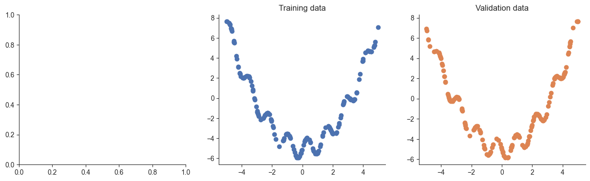
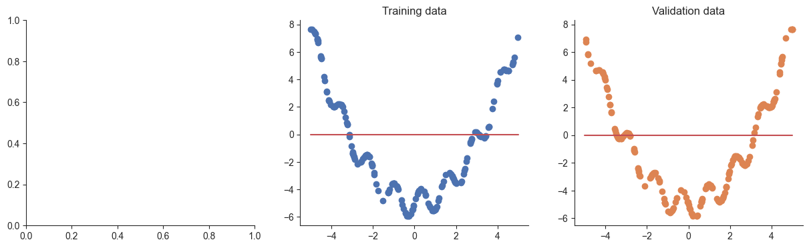

In the last homework we implemented automatic differentiation in terms of scalar values. For reverse mode, we saw that the update for a node \(w\) from a its child \(a\) could be written as: \[\frac{dL}{dw} = \frac{dL}{da}\frac{da}{dw}\]
In this case all three values in this equation were scalars and therefore the computation was quite simple. However we saw that this approach was quite inefficient when dealing with large arrays of numbers. A better approach that we saw in class was to have each node correspond to a vector (or possible a matrix). In this case if \(\mathbf{w}\) is a length \(n\) vector and \(\mathbf{a}\) is a length \(m\) vector we would say that: \[\mathbf{w} \in \mathbb{R}^n, \quad \mathbf{a} \in \mathbb{R}^m\] corresponding update equation would be written as: \[ \frac{dL}{d\mathbf{w}} = \frac{dL}{d\mathbf{a}}^T\frac{da}{d\mathbf{w}}\]
Recall that we called this update a vector-jacobian product. #### Q1 Assuming that \(L\) is still a scalar (\(L\in \mathbb{R}\)), what is the shape of each term in the equation above?
Your answer should be as matrix/vector dimensions e.g. \((a \times b)\)
\[\frac{dL}{d\mathbf{w}} = n\]\[\frac{dL}{d\mathbf{a}} = m\]\[\frac{d\mathbf{a}}{d\mathbf{w}} = m \times n\]
Q2
Assume that we have the following formula for \(\mathbf{a}\): \[\mathbf{a}= \exp \big( \mathbf{A} \mathbf{w} \big) + \mathbf{w}^2\] Where \(\mathbf{A}\) is a constant \(n \times n\) matrix. Given the gradient of \(L\) with respect to \(\mathbf{a}\): \(\frac{dL}{d\mathbf{a}}\), what is the gradient of \(L\) with respect to \(\mathbf{w}\) (\(\frac{dL}{d\mathbf{w}}\)) in terms of: \(\frac{dL}{d\mathbf{a}}\), \(\mathbf{A}\) and \(\mathbf{w}\)?
Hint: You do not need to write a formula for the Jacobian (\(\frac{d\mathbf{a}}{d\mathbf{w}}\)). As we saw in class many VJPs can be written without definining the Jacobian explicitly (e.g. for element-wise functions). You can use \(\odot\) (\odot) to denote an element-wise product between vectors:\[ \mathbf{a} \odot \mathbf{b} = \begin{bmatrix}
a_1 b_1 \\
a_2 b_3 \\
\vdots \\
a_d b_d \\
\end{bmatrix}
\]
Here we’ll start by writing out the vector-Jacobian product we’re looking for: \[\frac{dL}{d\mathbf{w}} = \frac{dL}{d\mathbf{a}}^T\frac{d\mathbf{a}}{d\mathbf{w}} = \frac{dL}{d\mathbf{a}}^T\frac{d}{d\mathbf{w}}\bigg( \exp \big( \mathbf{A} \mathbf{w} \big) + \mathbf{w}^2\bigg)\] Using the addition rule, we can distribute the derivative: \[=\frac{dL}{d\mathbf{a}}^T\frac{d}{d\mathbf{w}}\bigg( \exp \big( \mathbf{A} \mathbf{w} \big)\bigg) + \frac{dL}{d\mathbf{a}}^T\frac{d}{d\mathbf{w}}\bigg(\mathbf{w}^2\bigg)\]
For simplicity, let’s substitute \(\mathbf{b} = \mathbf{A}\mathbf{w}\) for now, so we can apply the chain rule \[=\frac{dL}{d\mathbf{a}}^T\frac{d}{d\mathbf{b}}\bigg( \exp \big( \mathbf{b} \big)\bigg)\frac{d\mathbf{b}}{d\mathbf{w}} + \frac{dL}{d\mathbf{a}}^T\frac{d}{d\mathbf{w}}\bigg(\mathbf{w}^2\bigg)\]
We see that \(\exp(w)\) and \(w^2\) are both element-wise operations, so we can use the rule we learned in class:
Now that we’ve successfully built our own tool for automatic differentiation and neural networks, let’s look at an industry-standard tool for accomplishing the same tasks: PyTorch.
We saw in class that we can create a function with parameters in PyTorch using the torch.nn module that we’ll import as just nn. We can do this by creating a subclass of nn.Module and defining the parameters with nn.Parameter.
import torchfrom torch import nnfrom hw5_support import*class LinearZeros(nn.Module):''' A PyTorch module representing a linear/affine function with weights W and bias b: f(X) = XW + b W is an (in_dimensions x out_dimensions) matrix and b is an (out_dimensions) vector. This version of the Linear module initializes the parameters to 0. '''def__init__(self, in_dimensions, out_dimensions):# Call the nn.Module __init__ functionsuper().__init__()# Create parameters that we can fit with gradient descent.self.weights = nn.Parameter(torch.zeros(in_dimensions, out_dimensions))self.bias = nn.Parameter(torch.zeros(out_dimensions))def forward(self, x):# Compute the function. Note that we use torch.matmul rather than torch.dot!# This assumes X is 2-dimensional (a matrix)!return torch.matmul(x, self.weights) +self.bias
We can create a 1-dimensional linear function by creating a LinearZeros object, specifying that both the input and output dimensions should be 1. The method model.parameters() will give us access to all the weights we can fit with gradient descent.
Let’s start by creating a simple dataset to use for the next few problems. We’ll use a regression dataset similar to the one we saw in class. In this case, I’ve provied data already split into training and validation sets.
# Create the training inputs and labelstorch.manual_seed(0)x = torch.rand(200, 1) *10-5.y = x **2/2+ torch.sin(x *5) -5# Create the validation inputs and labelsxvalid = torch.rand(200, 1) *10-5.yvalid = xvalid **2/2+ torch.sin(xvalid *5+ torch.pi) -5plotRegression(x, y, xvalid, yvalid)

We can make predictions for our data using the model we just definied:
However if we plot the prediction function, we’ll see that it isn’t very good as we haven’t optimized the parameters yet:
plotRegression(x, y, xvalid, yvalid, model=model)

The first thing we’ll need to optimize our model is a loss function. As we saw in class, the convention in PyTorch is to separate the loss from the model, so we’ll write a simple function that takes in predictions and labels, returning the mean squared error loss.
Q3
Complete the mse_loss function below. The function should compute the same MSE loss we’ve seen in previous homeworks, but using PyTorch operations.
def mse_loss(prediction, labels):return torch.mean((prediction.reshape((-1,)) - labels.reshape((-1,))) **2)# Test to check torch.manual_seed(0)assert torch.isclose(mse_loss(torch.randn(10, 1), torch.randn(10, 1)), torch.tensor(1.1550), 1e-3)
With our loss in hand, we can run gradient descent to optimize our model’s parameters. This time, we’ll use the torch.optim module, which includes many useful variations of gradient descent.
Q4
Complete the gradient descent function below. The function should: - Create an optim.SGD optimizer for the model’s parameters with the specified learning rate - At each step: - Compute the model output and loss (loss_func) on the training data - Compute the gradients of the loss with respect to the model parameters - Take a gradient descent step - Reset the parameter gradients to 0 - Compute the validation loss
from torch import optimdef gradient_descent(model, loss_func, x, y, xvalid, yvalid, lr=0.1, steps=5000): optimizer = optim.SGD(model.parameters(), lr=lr) losses = [] valid_losses = []for _ in tqdm.trange(steps): output = model(x) loss = loss_func(output, y) loss.backward() optimizer.step() optimizer.zero_grad() valid_loss = loss_func(model(xvalid), yvalid) losses.append(loss.detach().numpy()) valid_losses.append(valid_loss.detach().numpy())return losses, valid_lossestest_gradient_descent(gradient_descent, mse_loss, x, y, xvalid, yvalid)model = LinearZeros(1, 1)losses, valid_losses = gradient_descent(model, mse_loss, x, y, xvalid, yvalid)plotRegression(x, y, xvalid, yvalid, loss_history=losses, valid_loss_history=valid_losses, model=model)
Now that we have a function to train a PyTorch model, we can try something bigger and more exciting! Let’s train a neural network.
Q5
Create a PyTorch model for a neural network with the following specification: - The network should have 4 hidden layers, each with 20 neurons - The network should take 1-dimensional inputs as above - Each layer should use the LinearZeros module we just wrote - Each linear layer should be followed by a ReLU activation (except the output), use the nn.ReLU() module.
Hint: Remember that you can use the nn.Sequential class to easily compose a sequence of functions in PyTorch.
model = nn.Sequential( LinearZeros(1, 20), nn.ReLU(), LinearZeros(20, 20), nn.ReLU(), LinearZeros(20, 20), nn.ReLU(), LinearZeros(20, 20), nn.ReLU(), LinearZeros(20, 1), )# Test the model buildtest_build(model, LinearZeros, dropout_type=None, type='zeros')# Run the modellosses, valid_losses = gradient_descent(model, mse_loss, x, y, xvalid, yvalid)plotRegression(x, y, xvalid, yvalid, loss_history=losses, valid_loss_history=valid_losses, model=model)
What happened when you attempted to train the model above? Why did this happen? Give a short 1-2 sentence answer.
Nothing happened because we initialized all weights to 0.
Let’s try modifying our Linear module with a different strategy for initialization.
Q7
Modify the LinearZeros implementation from above to initialize the weights and bias parameters from a standard normal distribution \(w,b \sim \mathcal{N}(0, 1)\). Then modify your model from Q6 to use this new module.
Hint: You may find the torch.randn function useful here. You might also find that the model doesn’t train! We’ll address this in the next question.
class LinearNormal(nn.Module):def__init__(self, in_dimensions, out_dimensions):super().__init__()self.weights = nn.Parameter(torch.randn(in_dimensions, out_dimensions))self.bias = nn.Parameter(torch.randn(out_dimensions))def forward(self, x):return torch.matmul(x, self.weights) +self.biasmodel = nn.Sequential( LinearNormal(1, 20), nn.ReLU(), LinearNormal(20, 20), nn.ReLU(), LinearNormal(20, 20), nn.ReLU(), LinearNormal(20, 20), nn.ReLU(), LinearNormal(20, 1), )# Test the model build and LinearKaimingtest_normal(LinearNormal)test_build(model, LinearNormal, dropout_type=None, type='normal')losses, valid_losses = gradient_descent(model, mse_loss, x, y, xvalid, yvalid, lr=0.1)plotRegression(x, y, xvalid, yvalid, loss_history=losses, valid_loss_history=valid_losses, model=model)
In the previous question you might have found that gradient descent didn’t work. This could suggest that our learning rate is set wrong. Think about a strategy that you might use to find an appropriate learning rate for fitting this model and try it out below. Then explain the strategy that you used. Is there any way you could improve this strategy to make finding a learning rate quicker?
# Modify this code to choose a good learning ratemodel = nn.Sequential( LinearNormal(1, 20), nn.ReLU(), LinearNormal(20, 20), nn.ReLU(), LinearNormal(20, 20), nn.ReLU(), LinearNormal(20, 20), nn.ReLU(), LinearNormal(20, 1), )lr =0.00001losses, valid_losses = gradient_descent(model, mse_loss, x, y, xvalid, yvalid, lr=lr)plotRegression(x, y, xvalid, yvalid, loss_history=losses, valid_loss_history=valid_losses, model=model)
We saw in class that a common, useful approach for initializing neural networks is to use a Kaiming normal initialization. In this approach we draw each initial weight from a normal distribution where the standard deviation is scaled by the square root of the number of input dimensions to the layer. If \(\mathbf{W} \in \mathbb{R}^{d\times e}\) then: \[w_{ij} \sim \mathcal{N}\bigg(0, \frac{1}{\sqrt{d}}\bigg) \quad \mathbf{W}: d \times e\]\[b_j = 0 \quad \mathbf{b}: e\] We’ll initialize the biases to \(0\). Below, implement a linear module using the Kaiming normal initialization, then repeat Q5 using the LinearKaiming class and the learning rate you chose in Q8. Then if needed, adjust the learning rate until your model almost perfectly fits the training data.
class LinearKaiming(nn.Module):def__init__(self, in_dimensions, out_dimensions):super().__init__()self.weights = nn.Parameter(torch.randn(in_dimensions, out_dimensions) / np.sqrt(in_dimensions))self.bias =nn.Parameter(torch.zeros(out_dimensions))def forward(self, x):return torch.matmul(x, self.weights) +self.biasmodel = nn.Sequential( LinearKaiming(1, 20), nn.ReLU(), LinearKaiming(20, 20), nn.ReLU(), LinearKaiming(20, 20), nn.ReLU(), LinearKaiming(20, 20), nn.ReLU(), LinearKaiming(20, 1), )# Test the model build and LinearKaimingtest_kaiming(LinearKaiming)test_build(model, LinearKaiming, dropout_type=None, type='normal')lr =0.01losses, valid_losses = gradient_descent(model, mse_loss, x, y, xvalid, yvalid, lr=lr)plotRegression(x, y, xvalid, yvalid, loss_history=losses, valid_loss_history=valid_losses, model=model)
If all went well so far, we should find that our model fits our data well, but perhaps a little bit too well. Let’s try out some of the strategies we’ve seen to reduce overfitting, starting with early stopping.
Q10
Modify your gradient descent algorithm to implment a basic form of early stopping: stop gradient descent as soon as the validation loss increases from the previous iteration. Test this approach with the same model from Q9.
Did this approach work as intended? Why or why not? Think about how you might improve this approach and explain any ideas you have in 1-2 sentences.
No, it stopped too early.
Q12
Modify your early stopping gradient descent so that it always runs for at least 50 iterations. Then after 50 iterations stop if at any point the validation loss is larger than the average validation loss for the previous 50 iterations.
Now let’s try out L2 regualrization! We will consider a scaled version of L2 regularization, where for a \(d \times e\) weight matrix \(\mathbf{W}\) we will define the L2 loss as: \[\textbf{Loss}_{L2}(\mathbf{W})= \frac{\lambda}{d e}\sum_{i=1}^d\sum_{j=1}^e w_{ij}^2 \quad \mathbf{W}: d \times e\] Here \(\lambda\) is a value that we can choose to control how much weight we put on our L2 loss (we’ll call it l2_weight below).
Q13
Modify your original gradient descent algorithm from Q4 (no early stopping) to add the L2 loss for each parameter in the model to the loss.
Hint: Recall that we can access every parameter in the model using the model.parameters() method. In this question you do not need to worry about distinguishing between weights and biases, you can apply L2 regularization to biases as well if it simplifies your approach. Your validation loss should not include the regularization terms.
from torch import optimdef gradient_descent_l2(model, loss_func, x, y, xvalid, yvalid, lr=0.1, l2_weight=1., steps=5000): optimizer = optim.SGD(model.parameters(), lr=lr) losses = [] valid_losses = []for _ in tqdm.trange(steps): output = model(x) loss = loss_func(output, y) losses.append(loss.detach().numpy()) l2_loss =0for p in model.parameters(): l2_loss = l2_loss + torch.mean(p **2) loss = loss + l2_weight * l2_loss loss.backward() optimizer.step() optimizer.zero_grad() valid_loss = loss_func(model(xvalid), yvalid) valid_losses.append(valid_loss.detach().numpy())return losses, valid_losses# Test our functiontest_gradient_descent(gradient_descent_l2, mse_loss, x, y, xvalid, yvalid, l2=True)
TypeError: test_gradient_descent() got an unexpected keyword argument 'l2'
Q14
Apply gradient_descent_l2 as in previous problems. Find an appropriate setting of l2_weight that minimizes the validation loss.
Hint: How you go about choosing l2_weight is up to you! Your validation loss should be lower than the validation loss without regularization.
Finally let’s try out dropout regularization. We will implement dropout as its own module, so we can think of it as a function that transforms a vector or matix into a vector or matrix of the same shape with elements randomly set to \(0\). In this case we can write the dropout function as: \[\text{Dropout}(\mathbf{X}, r) = \mathbf{D} \odot \mathbf{X}, \quad \mathbf{D} =
\begin{bmatrix}
d_{11} & d_{12} & \dots & d_{1n} \\
d_{21} & d_{22} & \dots & d_{2n} \\
\vdots & \vdots & \ddots & \vdots \\
d_{m1} & d_{m2} & \dots & d_{mn}
\end{bmatrix},\ d_{ij} \sim \text{Bernoulli}(1-r)\]
Here \(\odot\) denotes element-wise multiplication (so \(\mathbf{D}\) and \(\mathbf{X}\) are the same shape), \(r\) is the dropout rate so \(p(d_{ij}=0)=r\).
At evaluation time, we do not want to randomly drop elements. Instead we will scale \(\mathbf{X}\) by \((1-r)\): \[\text{Dropout}_{\text{eval}}(\mathbf{X}, r) = (1-r)\mathbf{X}\]
Q15
Complete the implementation of the Dropout module below.
Hint: The built-in training property of an nn.Module instance specifies if our model is in training mode or evaluation mode. By default models are in training mode (training == True), but we can set a model to evaluation mode by calling model.eval(). Then we can use model.train() to set it back to training mode.
You may find the function torch.rand_like() helpful for this problem. You might also find it helpful to know that you can convert and boolean tensor X into a float tensor by calling X.float() (True becomes 1., False becomes 0.)
class Dropout(nn.Module):def__init__(self, rate=0.01):# Rate specifies the dropout rate (r)super().__init__()self.rate = ratedef forward(self, x):# YOUR CODE HEREifself.training:return x * (torch.rand_like(x) >self.rate).float()else:return x * (1-self.rate)test_dropout(Dropout)
Passed!
Q16
Modify your gradient_descent function to put the model into train mode before calculating the training loss and into eval mode before calculating the validation loss. Then create a model based on your network from Q9, but this time add a Dropout layer before each LinearKaiming layer. You can use the default dropout rate of 0.01 or try something different! Verify that dropout gives different results to previous approaches.